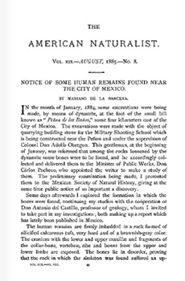
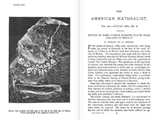

Referencias
- Canudas, S.E. 2005. Las venas de plata en la historia de México. Síntesis de Historia Económica siglo XIX, III. Universidad Juárez Autónoma de Tabasco, México. 1879 p.
- Comisión Nacional del Agua. Historia del Servicio Meteorológico Nacional.
- Guevara, F.R. 2002. Los últimos años de la historia natural y los primeros días de la biología en México. Cuadernos del Instituto de Biología 35. Instituto de Biología UNAM. 212 p.
Mariano Bárcena
1842 - 1899
Mariano Santiago de Jesús de la Bárcena Ramos fue ingeniero, político y un hombre de ciencia muy prolífico. Nació en Jalisco en 1842 y murió en ese mismo estado en 1899.
En 1864 inició sus estudios en la Real Academia de San Carlos y más tarde continuó en la Escuela Nacional Preparatoria. Posteriormente pasó a ser estudiante de Ingeniería en la Escuela de Minas. Fue miembro de la Sociedad Filomatemática Mexicana, de la Sociedad Mexicana de Historia Natural y socio de la Sociedad Mexicana de Geografía y Estadística.
En el campo de las ciencias naturales describió y clasificó especies vegetales y dio nombre a dos especies fósiles. Además, por su trabajo en la Secretaría de Fomento, participó en diferentes comisiones de exploración a lo largo del territorio mexicano. De la información recabada derivaron sus tratados de geología, paleontología y litología: Noticia geológica del estado de Aguascalientes, Las obsidianas de México, Datos para el estudio de las rocas mesozoicas de México y sus fósiles y Noticia acerca del hallazgo de restos humanos prehistóricos en el valle de México.
En 1877 se creó el Observatorio Meteorológico Central, precursor del Servicio Meteorológico Nacional, del cual fue su director hasta su muerte. Ahí coordinó las investigaciones sobre el clima y el tiempo; creía que la observación minuciosa de éstos durante años, le daría elementos para establecer reglas sobre los fenómenos periódicos de la vegetación y se podrían establecer “calendarios botánicos”.
También desempeñó cargos en la política, fue nombrado secretario de gobierno de Jalisco así como gobernador de ese estado por un breve periodo.
Para saber más...
En 1868 se fundó la Sociedad Mexicana de Historia Natural y al año siguiente apareció su periódico de ciencia La Naturaleza. Ahí Mariano Bárcena publicó por primera vez en 1874 la descripción de un fósil mexicano: un crustáceo de la época Terciaria del estado de Jalisco.
Aportación


Notice of Some Human Remains Found Near the City of Mexico by Mariano de la Bárcena